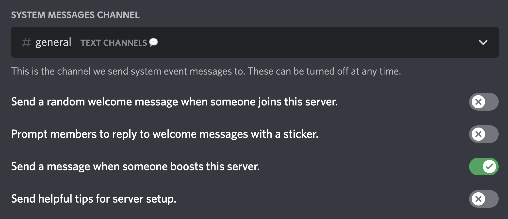

Basic bot setup
Let's setup few things so that bot can detect new boosters properly.
Detecting members who boosted before bot was added:
By default, bot adds existing boosters to booster-database with 1x boost but there is NO WAY for the bot (or anyone else) to see how many times someone has boosted.
However you can edit anyone's number of boosts with Booster Bot Premium.
- Enable discord's system boost message -- to detect boosts.
- Give bot read message permission in system channel -- to see system messages.
- Send message & embed links perms in
greet-channel&log-channel(optional).
Server settings screenshot: 
However, there are few things to note here -
1. There are cases when someone boosts 2 times rapidly (1 by 1) and if bot had any ocassional lag at the same time, bot will count that as 1 boost instead of 2.
2. If you've not setup the bot correctly OR bot had any downtime, you can add missed booster with bb boosters add @user command and booster will be added with 1x boost.
Now that you've setup the new boost detection, let's continue with boost removal part.
- Bot will detect that someone removed boost only if discord's default booster role is removed from them. Which means that it'll only detech when booster removes all of their active boosts from the server.
- Ex - if someone had 2 boosts and they removed 1, no one (including the bot) can detech they removed the boost. It is something that discrod lacks.
With all the information you have on how bot works, let's begin with greeting & logging.
Greet Message:
Thankyou message for boosts can be setup with bb greet command.
You can check more about that command here OR type bb help greet and bot will show you all available options to customize the message.
Log Message:
Updates on boost added/removed can be setup with bb setup log-channel OR bb setup log-events command.
As bot has many things to offer to boosters, it can log everything you need with log-channel command in 1 channel and if you need separate channel for separate events OR you only want specific events like boost-added logs, you can use log-events for that.